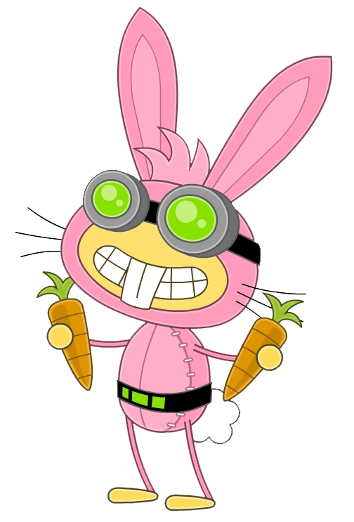
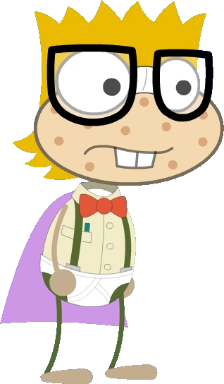
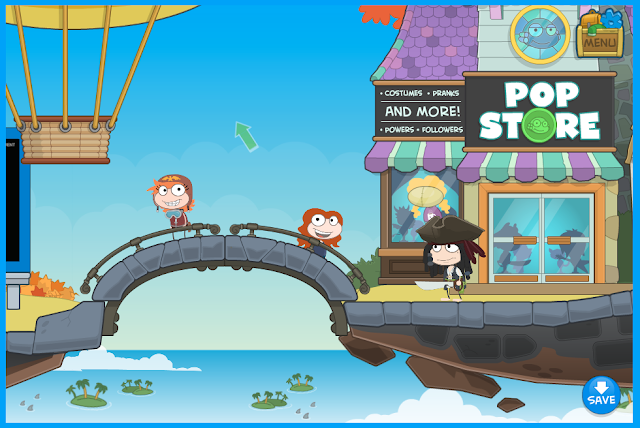
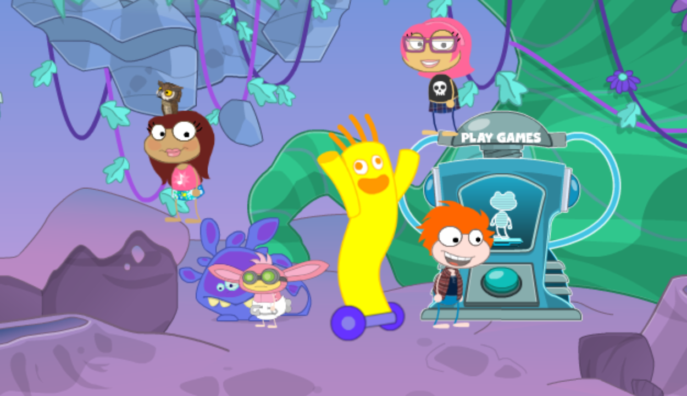
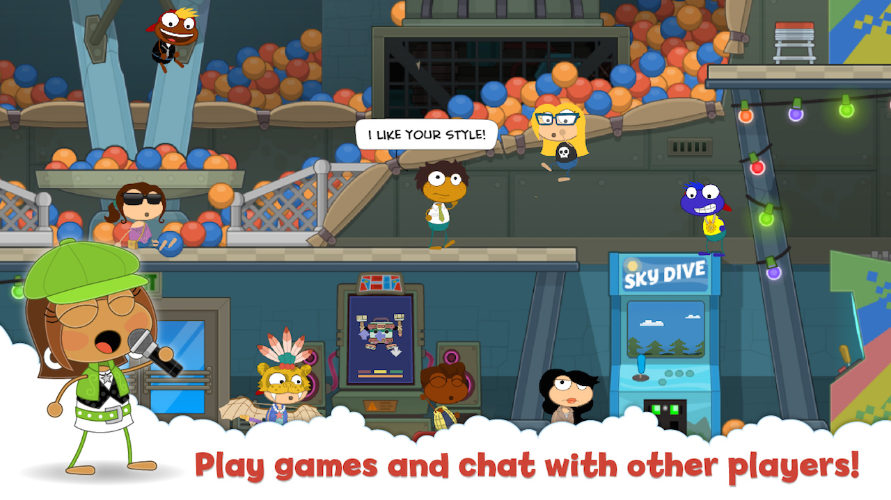

Poptropica is an online role-playing game and the game primarily focuses on problem-solving through game quest scenarios, called "islands". Islands all center on a problem that the player must resolve by going through multiple obstacles, collecting and using items, talking to various characters, and completing goals. All islands, upon completion, award "credits," which are non-negotiable currency that may be used to buy costumes and special effects in the Poptropica store.
 In 2020, because of the discontinuation of Adobe Flash, Poptropica began porting their old islands that were built on Adobe Flash over to an HTML5 format. As a result of Poptropica's utilization of varying Flash engines, a number of islands were unable to be ported immediately, and were effectively removed from the game. However, the game is still avaliable to play here: https://www.poptropica.com/
   p>Homepage